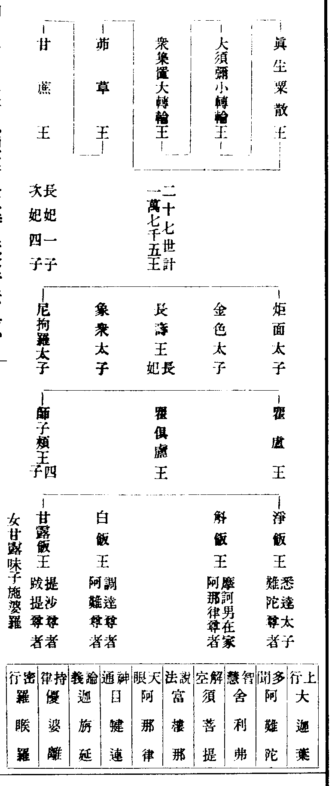
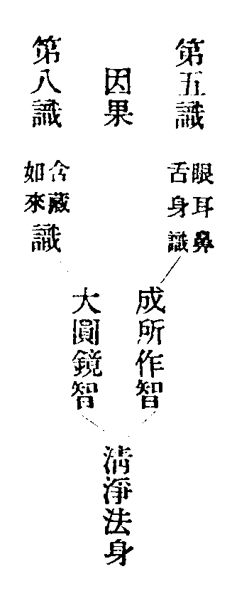

卍新纂大日本續藏經 第76冊
No.1517 歷朝釋氏資鑑 (12卷)
【元 熙仲集】
第 1 卷
No. 1517-B
切聞。滄海浩大。非驪龍無以察其淺深。佛法幽微。非智人無以究其源本。然三才筆立之初。世號鴻荒。人方穴居野處。不辨尊卑。而斯民之耳目。猶塗於見聞也。自庖犧晝八卦。而文籍始生。神農作耒耜。而畊稼始立。黃帝造律本。而樂音始著。堯舜垂衣裳。而禮制始明。凡數聖人。所以開天地之經。立生人之紀。使後之作者有所持循。而百王綱理世變之道。由此而出也。至于姬周之世。合三十七君。其間三教聖人先後出興。曰佛。曰老子。曰夫子。見於史傳。則昭然耳。自第四君昭王二十四年甲寅四月八日。佛之示現西竺迦維羅衛國。降誕王宮。以剎利瞿曇為姓。以悉達太子為名。成道以釋迦為氏。號曰牟尼。此譯寂默。言三業離於諠雜。金軀一丈六尺。具三十二相八十種好。而號為佛。佛者覺義。謂其弘法自覺覺他。住世七十九年。逮第二十一君定王三年丁巳。越三百四十有五年。而老子方生於楚苦縣厲鄉曲仁里。姓李。名耳字伯陽。諡聃。或云身長四尺六寸。厖眉皓首。故謂之老子。子者男子之通稱也。至二十四君靈王二十一年庚戌。則老子年五十四歲時。夫子始生於魯昌平陬邑。而先人禱於尼丘山而誕。首上圩頂。因名丘。字仲尼。姓孔氏。儀表九尺六寸。夫子者盖丈夫之稱爾。年七十三而卒。乃恭王四十一年壬戌也。老子方書。說養性以保長生。周孔圖書。則訓人而脩禮樂。釋迦之教。能施慈悲。攝於有情。作眾生之福田。為愛河之舟楫故萬物之內。惟人最靈。三界之中。惟佛至尊。法演西乾。教流東震。真身舍利。代代欽崇。玉軸金文。人人諷誦。宏資
國化。廣利眾生。聊纂斯文。厥書于后。明佛祖之垂慈。彰王臣之皈仰。結為歷朝釋氏資鑑錄云。
釋氏資鑑目次
釋氏資鑑目次(終)
No. 1517
歷朝釋氏資鑑卷第一
帝紀
歷代帝王。多出於黃帝 夏禹出於顓頊 商湯出於契 周出於棄(皆帝嚳之子也) 秦祖伯益(亦顓頊之子也) 漢以劉氏承堯運堯(黃帝玄孫) 魏曹氏。曹叔振鐸之後。自周晉司馬氏。出於重黎。亦顓頊之後 宋劉氏。漢楚元王交之後。亦堯之裔 齊梁蕭氏。出於春秋蕭。蕭子姓。乃商之後。陳舜之後 隋楊氏出顓頊 唐李氏出顓頊之子皐陶。皐陶為大理(後嗣逃。食李得生。故改為李氏) 梁朱氏(本春秋邾。邾姬姓。周之後) 周郭氏(出周郭叔。皆帝嚳之後) 宋趙氏(出於顓頊子伯益。其後〔所〕造父。周穆王時。封於〔城〕。子孫因為姓。晉趙皆其子孫。秦始皇時。子孫分處四方。漢有趙廣至漢者居) 大元廼剎帝利種。
長阿含經云。賢劫初成。未有日月。是時光音天人下生皆有身光。飛行自在。無有男女尊卑親疎之別。食自然地味。因食此物乃身光滅。神通亡。貪心始萠。後生地餅地膚地脂之味。食此乃諸惡湊集。男女始形。地生粇米。朝刈暮生。亦無糠糩。時人貪心增長。皆有預取厚藏。米遂不生。乃占田土。學耨種業。自此姦盜滋彰。無決斷者。中有一人。容質[王*(十/(罩-卓+衣))]偉。世所欽信。眾議立為民主。號摩訶三摩曷羅闍。此云大平等王。各願輸賦供億。此租之始也。故命是剎帝利。此云田土主。初分田土。各有諍訟。使之主也。
佛本行經云。此賢劫初建立。有大轉輪王。眾集置。亦名大眾平章地。亦名剎利王。王有長子名真實。子孫相承二十七世。各有千子。計二萬七千。皆轉輪王。至大須彌王。子孫相繼。至魚王一十八世。子孫相紹。計一十七萬三千二百八十四。皆小轉輪王。魚王有子。(名真)生。粟散王。至大茆草王。三十一世。計一百丹八。皆粟散王。茆草王亦名奢夷耆耶。亦名瞿曇氏。年老捨位出家。因遭獵人所射滅。乃滴血入地。遂生甘蔗二莖。一莖中化成男子。一莖中化成女子。眾所奉養。遂紹王位。稱甘蔗王。其王有二妃。生五子。長名長壽。次炬面等。其第四子。有大仁德。以長妃侫其父令出家。時子母眷屬人民多眾。隨往雪山下建。國號迦毗羅王。別稱成王。遠邇欽伏。不久而成大國土。內外豐稔。父王知憶歎曰。我子能仁釋迦故有釋迦氏。王有子名瞿盧。王一子瞿俱盧。一子師子頰。師子頰四子。甘露白淨斛飯王等。從眾集置大轉輪王。歷經計二萬五百丹三王。方至淨飯王。
准起世經云。從剎利帝。亦名大平等王。即眾集王。經二千王。乃至茆草王。從茆草王。經四十一萬二百三十六王。方至瞿曇氏。有子名甘蔗王。經七萬二千二十二王。方至淨飯王。通計一百二十萬七千三百六十一王。兩經所譯。五印不同。世尊已於無數劫無數世成佛。或為梵王帝釋大轉輪王小轉輪及粟散王等身。復於無數佛所出家。修菩薩行。修菩薩道。或云遇示誨幢如來。始發菩提心。超彌勒之四十餘劫。或云遇然灯佛。始蒙授記。自然灯佛至迦葉。皆佛授手。皆佛授記云。當來世成佛號釋迦牟尼佛。至護明菩薩。上生兜率。下降迦毗。捨金輪寶位。出家成道。說法治世七十九年。正法像法至于法盡。度無量眾生。法不窮爾。
大梵天王問佛決疑經云。大梵天王至靈山會上。以金色娑羅華献佛。請佛為群生說法世尊登座。拈華示眾。瞬青蓮目。人天百萬悉皆罔措。獨金色頭陀。破顏微笑。世尊言。吾有正法眼藏涅槃妙心。實相無相微妙法門。不立文字。教外別傳。分付摩訶大迦葉。拈華事。世皆不知所出。惟王荊公□□□□□直宿翰苑。偶見祕藏此經(禪林遺訓)。
依付法藏傳云。佛以正法付大迦葉。令其護持。不使天魔龍鬼邪見王臣所有輕毀。既受囑已。結集三藏。流布人天藥叉。以法囑累阿難。如是展轉。乃至師子。合二十五人。並閻浮洲中六通聖者。大迦葉令在靈鷲西峯岩中。坐滅盡定。五六百億七千萬歲。慈氏佛降生。傳能仁佛所付大僧伽多梨衣。然後涅槃。
又按諸經律。佛令大阿羅漢賓頭盧。不得滅度。傳於佛法三天下。福利眾生。令出生死。
福城開元莊嚴禪寺住持比丘慧有助緣鈔壹伯貫。
天竺種姓有四 一者剎帝利謂棄世君王種。即釋迦如來之種也 二者婆羅門。秦言外意。謂行志道。其種別有經書。世世相承。或在家出家苦行。多恃己術。自我慢人 三者毗舍。或云伏奢。商賈之種 四者首陀。或云達羅。田農之種也。
佛
釋迦如來宗派

調御十身 無著。弘願。業報。住持。涅槃。淨法。真心。三昧。道性。如意。
十力(是處非處。知業。三昧。知根。知欲。知性。至道。宿命。天眼。無漏)。
三明(生死。宿住。知證)。
六通(天眼。天耳。他心。宿命。神境。如意。漏盡)。
十八不共法 一(身業無失)二(無卒暴音)三(無忘失念)四(無不定心)五(無種種想)六(無不知捨)七(〔忘〕欲無退)八(精進無退)九(正念無退)十(智慧無減)十一(解脫無減)十二(知見無減)十三(一切身業隨智慧行)十四(一切語業隨智慧行)十五(一切意業隨智慧行)十六(知過去世無着無礙)十七(知現在世無着無礙)十八(知未來世無着無礙)。
轉八識成四智。束四智為三身
第六識 意想。妙觀察智。圓滿報身。

第七識 (傳送樂習)識。平等性智。千百億化身。
六祖禪師頌
大圓鏡智性清淨 平等性智心無病
妙觀察智見非功 成所作智同圓鏡
五八六七果因轉 但轉其名無實性
若於轉處不留名 繁興永處那伽定
如來(無虗妄)應供(良福田)正徧知(知法界)明行足(具三明)善逝(不來還)世間解無上士(無二世間。國土世間。眾生世間)調御丈夫(能調伏眾生身心惡)天人師(能為眾生作眼目)佛(知善法聚不善法聚非善法聚非不善法聚)世尊(二世之中無二佛)。
十號圓明 萬行具足 天龍戴仰 稱無上尊。
法
三藏 修多羅(阿難經〔眾〕結集為經)毗奈耶(優婆離結集為律)阿毗曇(諸大菩薩〔衍〕而為論)。
五時(方等。華嚴。般若。法華。涅槃)。
鹿苑十二部經(梵語修多羅。祇夜。毗迦蘭那。伽佗。尼佗羅。優佗那。伊帝目多伽。闍多伽。波佗。毗佛略。阿浮達磨。優婆提舍。唐言契經。重頌。授記。〔說〕誦。因緣。自說。本事。本性。譬喻。方廣。未曾有。論義)。
儀化四教(頓。漸。秘密。不定)。
法化四教(藏通別圓)。
十信(信心。志念。精進。聞慧。正定。不退。護法。迴向。持戒。發願)。
十住(發心。治地。修行。生貴。具足。正心。不退。童真王子。灌頂)。
十行(歡喜。饒益。無違逆。無掘撓。無痴亂。善現。無着。難得善法。真實)。
十迴向(護生離生相。不壞。等一切佛。至一切處。無盡功德。入一切平等。隨順眾生。真如相。無着無縛。人法界無量)。
十地(歡喜。離垢。發光。燄慧。難勝。現前。遠行。不動。善慧。法雲)。
十波羅蜜(布施。持戒。忍辱。精進。禪定。般若。方便。大願。大力。大智)。
四無量 大慈(廣濟)大悲(拔苦)大喜(無畏)大捨(無為)。
四攝法 布施(利誘)愛語(智拔)利行(克己)同事(和光)。
四德 常(壽如如無變身)樂(常寂靜體無為)我(善觀察無罣礙)淨(處世界如蓮華)。
四諦 苦(迷涅槃為生死)集(迷菩提為煩惱)滅(轉生死即涅槃)道(轉煩惱即菩提)。
一音演說 普應群機 究竟清淨 名離欲尊。
僧
三十七道品 四念處(觀身不淨。觀受是苦。觀心無常。觀法無我)四神足(樂欲精進。正心。觀行。如意)。四正勤(已生惡令斷。未生惡令不生。未生善令生。已生善令增)。五根(信進念定慧根)。五力(信進念定慧力)。七菩提分(念。擇法。精進。喜。輕安。定。捨覺支)。八聖道分。正見(不惑)。正思(無邪)。正語(無遇)。正業(無作)。正命(乞食)。正進(無妄)。正念(無二)。正定(不亂)。
三德(法身。般若。解說)。
三解脫(空。無相。無願)。
四辨才(達法。勝我。言詞。樂說無礙)。
四善法(親近善友。听聞正法。思惟其義。如說修行)。
淨命衣 一(隨處得衣蔽形即足)二(拾糞掃〔枝〕或但衫衣)三(多寒國土畜百〔劫〕具)。
淨命食 一(常自乞食)二(僧中淨食)三(檀越送食)。
五觀 一(計功多少量彼來處)二(忖己德行全缺應供)三(防心離過貪等為宗)四(正事良藥為療形枯)五(為成道業應受此食)。
三德(清潔。柔軟。如法)。
六味(鹹淡辛酸甘苦)。
粥有十利(資色。增力。益壽。安樂。辦事。風除。辭清。消宿食。消飢。消渴)。
八大福田(廣路義井。建造橋梁。平治險隘。孝順父母。供養三寶。給事病人。救濟貧苦。設無遮會)。
四恩 佛師(法化教導)國王(水土外護)父母(養育劬勞)信施(四事供養)。
六和(身和同住。口和無諍。意和無違。戒和同遵。見和同解。利和同均)。
三學 戒定慧(三無漏學。成就一切種智。出生八萬四千清淨妙門)。
三毒 貪嗔癡(佛云。世之毒無過三毒。具足八萬四千塵勞煩惱)。
僧預十科 翻譯。解義。習禪。明律。護法。感通。遺身。讀誦。興福。雜科。
僧具六寶 禪定(頓悟自心超凡入聖)講律(具戒定慧有大辨才)高上(行解雙運不入世流)文章(見聞深實學古驗今)王事(〔智〕恩識果慈威並行)常僧(精進功業長養聖胎)。
尼遵八敬 一(百歲尼禮初學僧足)二(尼不得罵比丘)三(不得舉比丘過)四(尼犯僧殘求僧懺悔)五(式叉摩那尼從僧具戒)六(尼至半月听僧教誡)七(尼近僧處斷習修道)八(尼安居竟依僧自恣)。
脫塵異俗 圓頂方袍 入聖超凡 為眾中尊。
三有 欲界(攝四州四惡并六欲天)色界(攝色界十八天并四禪)無色界(空處識處〔無有非天〕)。
九次第定(初禪。二禪。三禪。四禪。空處。識處。無所有處。非非想處。滅盡想處)。
二十五有(四州四惡處八。六欲并梵天七。四禪四空處八。無想五那舍二)。
七懺悔法(常念佛恩。生大慚愧。深畏果報。廣發善心。觀罪性空。厭離欲染。冤親平等)。
六念 念佛(慈悲導師歸依正覺)。念法(三世佛母如教奉行)。念僧(人天福田宜應供養)。念施(普施眾生成就福慧)。念戒(清淨心身息滅眾惡)。念天(長壽安樂自在精進)。
三聚(利益有情。攝律儀戒。攝善法戒)。
五戒(不殺。盜。淫。妄語。飲酒)。
受戒五利 一(〔什法〕諸佛愍念守護)。二(命終之日正見歡喜)。三(常行勝處菩薩為友)。四(功德戒聚悉得成就)。五(今世後世福慧滿足)。
三界。
天上五衰(頭上華萎。腋下汗〔氣〕。身光不現。衣染塵垢。不樂本位)。
人間四相。生(夭壽不定)成。老(色力衰損)住。病(四大不調)壞。死(識隨業□)空。
五蘊 色(色空)受(觸離)想(記忘)行(滅生)識(湛搖)。
十八界。識(眼見色。耳聞聲。鼻齅香。舌甞味。身染觸。意緣法 由內六根。使中六識。緣外六塵。成十八界)。
十二因緣 無明。行。識。名色。六入。觸。受。愛。取。有。生。老死。
三惑(無明。見思。塵沙)。
三障(煩惱。業。報)。
十纏(無慚。無愧。嫉妬。疑悔。掉舉。怨恨。慳吝。睡眠。昏沈。覆藏)。
十使(身見。邊見。戒取。見取。邪見。貪。瞋。痴。慢。疑)使。三界共成八十八使。
六種邪見(斷。常。自然。苦行。逐僻。曲因不由)。見(各各出生。共成九十六種外道邪見)。
外道六師 富蘭那(說不生不滅計雙非一門)末迦利(說空自然撥無因果)刪闍夜(說過八萬劫道不用修)阿耆多翅舍(說修苦行拔髮等法)迦羅鳩陀(說兩亦法□亂不定)尼犍子(說業定執人死復人)。
五刑 突吉羅(笞金)削 提舍尼(杖木)割 波逸提(徒水)劓 僧殘(流火)墨 波羅夷(死土)。
七情 喜。怒。憂。懼。愛。憎。欲。
八風 利(財喜)衰(憂病)毀(訕謗)譽(欽讚)稱(揚德)譏(刺誚)苦(迫惱)樂(放逸)。
八苦(生。老。病。死。愛別離。怨憎會。求不得。五陰盛)苦。
五種邪命 一(為利養故詐現奇特)二(為利養故自說功德)三(為利養故占相吉凶)四(為利養故高聲現威令人畏懼)五(為利養故彰己有德感動人心)。
大三灾 大水(世界漂沒至初禪天)大火(大地洞然至二禪天)大風(須彌飄擊至三禪天)。
小三災(刀兵。疾疫。飢饉。惟善同劫不同愛)。
十惡(殺生。偷盜。邪婬。妄語。惡口。兩舌。綺語。貪欲。嗔恚。邪見)○(華嚴經云。十惡業報。上等地獄因。中等餓鬼因。下等畜生因。誡之即十善道。下品生人天。中品二乘。上品菩薩佛乘)。
八難 地獄趣(貪欲)餓鬼趣(嗔恚)畜生趣(愚痴)北俱盧洲(頑嚚)生在佛前(慢嫉)生在佛後(懶怠)聾盲瘖瘂(謗法)世智辨聰(闡提)。
四依(依糞掃衣。依殘棄藥。依乞食。依樹下居)。
須陀洹 斯陀含 阿那含 阿羅漢
究竟
生。老。病。死。憂。悲。求不得。冤憎會 八苦。
色受想行識 五蘊。
三十七品助道。四無量心。
貪嗔痴 畢竟斷故。
(此四果修行依此究竟即證果也)。
辟支佛果十二因緣。菩薩果六波羅蜜。摩訶薩埵添方便願力智四波羅蜜。
釋迦文賦
原夫佛者覺也。神而化之。修六年而得道。統三界以稱師。帝釋梵王。尚猶皈敬。老聃宣父。寧不參隨。昔如來下兜率天。生中印土。降神而大地搖動。應蹟而諸天擁護。九龍吐水滿身而花落紛紛。七寶祥雲舉足而蓮生步步。蓋以玉輦呈瑞。金輪啟圖。恩霑九有。行洽三無。寶殿之龍顏大悅。春圍之鳳德何虞。方知灌頂之靈心。興王後嗣。必為萬類之化主。作帝中樞。豈不知海量無邊。天情極廣。厭六宮珠翠之色。惡千妃絲竹之響。雪山深處。全拋有漏之身心。海月圓時。頓悟無為之法想。莫不魔軍振動。法界奔驚。覺閻浮之日出。覩憂鉢之華生。十方調御。皆來圓光自在。六趣含靈。盡喜金色分明。暨乎萬法歸空。雙林告滅。演摩訶般若之教。示阿耨多羅之訣。普光殿裏。會十地之華嚴。耆闍山中。授三乘之記莂。是知靈覺無盡。神理莫聞。芥子內三千之國。藕[糸*系]藏百萬之軍。目容修廣於青蓮寒生定水。毫相分明於皓月照破迷雲。群機而不覩靈蹤。萬世而空留聖跡。嗟釋迦之末法將盡。仰慈氏之何日調伏。我今迴向菩提。一心歸命圓寂。
正法一千年。前五百年。解脫為正宗。禪定為兼脩。後五百年。禪定為正宗。多聞為兼脩。
像法一千年。前五百年。多聞為正宗。福德為兼脩。後五百年。福德為正宗。鬪諍為兼脩。
末法一萬年。鬪諍為正宗。懈怠為兼脩。
釋迦如來入涅槃。至今
大元至元二年歲丙子。歷計二千二百八十五載(自此之後積年遞增歲數)。
菩薩戒經云。是日已過。命亦隨減。如少水魚。斯有何樂。眾等當勤精進。如救頭然。但念無常。慎勿放逸。
夫述身毒國如來託生。當此真丹姬周時也。年代浸遠。人世參差。指而言之。亟迷前後。今編次甲子。紘絡古今。續以帝年綱紀時代。庶禪讓覇主。若鏡目前。遷革朝市。如鑑掌內。然後考諸君王。澤被撫適時。佛法化流。應機濟物。釋經孔教。理契冥符。可謂靈降五天。瑞通八表者也。姬昌母夢大人。感因而生。昌龍顏虎眉。身長一丈。胸有四乳。國濵西戎。政被東漸。赤雀降祉。改稱周。諡曰文王。都鄷。收葬枯骸。天下歸服。故夫子曰。文王之德美哉。不動而化。到其子發武王。伐紂。徙都鎬京。路逢暍人。下車而扇。卑輕萬乘。子愛兆民。故孫卿子云。武王生則天下歌。死則四海哭。至魯春秋莊公七年夏四月辛卯夜。恒星不現。夜中星隕如雨。案此則如來誕生旹也。
育王傳云。泥越後百六十年。閻浮提王。名阿輸伽。出東天竺。治華氏城。收舍利。散起八萬四千寶塔。匝閻浮提。頗欲周徧天竺。傳載可得略言。真丹國城。江漢左右。關隴東西。處處皆有。彼時當此周敬王世二十六年丁未歲也。凡歷四處。羸昭襄王立。五十二年。滅周稱秦。改鎬京為咸陽。仍即都之。至第四主始皇帝正二十六年。蕩除六國。二十七年。廢罷九州分天下為三十六郡。三十四年。所有典籍。悉皆焚燒。惟醫方藥術。不在爇限。降此悉灰。緣是聖教靈跡。及阿育王造舍利塔。傳記堙絕。靡知所承。又始皇時。有諸沙門。釋利房等十八賢者。賷經來化。始皇弗從。遂焚釋利房等。夜有金剛神。身長丈六。來破獄出之。始皇驚怖。稽首謝焉。四主合四十九年。為楚王所誅。而漢滅之。起周武王元年己卯。訖秦二世敗歲甲午。其間九百三十三年。四十二主。至周十六王。四百五十三年。佛未出前。名而不錄。起自昭王如來誕世。到乎漢始方紀歷年。二十六主。四百八十一載。總結為周秦世錄。明佛乘應教被東土云耳。
周
文(昌)武(發)成(誦)康(訓)昭(瑕)。
昭王二十三年歲癸丑。七月十五日。摩耶夫人。夢白象乘日輪。入于腹中。覺而自知身重。
甲寅 二十四年四月八日。有白虹貫日之祥。是日摩耶夫人游毗藍園內。無憂樹下。右脇誕生太子。放大光明。瑞氣盈空。九龍吐水。灌沐金身。即乃周行七步。目[(厂@?)*頁]四方。指天指地。作獅子吼。天上天下。惟我獨尊。昭王獲覩日月重輪。色類並現。驚怪非常。乃問大臣。是何靈異。現此祥瑞。時太史蘇由。卜而奏曰。易得乾卦。金主之位。位在西方。飛龍在天。是君主之位。此大聖人也。王曰。於此國若何。奏曰。此聖人身不來此地。若滅後一千年。必有教法流來此國。王遂令所司於洛陽南郊壇側。竪一碑記。明之後代(周書異說法王記)太子年十五歲。納耶輸氏多羅○年十九欲出家。夜有天人。白太子言。出家時至。於子夜踰城。往檀特山中修行。鬱頭藍弗處。學非非想。越六年十二月八日夜。明星出時。成佛號天人師。三十於鹿野苑說法。度阿若憍陳如等。住世七十九年。說法四十九年。
穆王名滿。在位五十三年。粲粲光明照於平土。此時佛在西方。說法度生。王不知是佛現瑞。惟言國中有難。遂令國師。撿點兵馬。防於西界。
壬申 穆王五十二年二月十五夜。佛入般涅槃。是時乾坤震動。有白虹十二道貫日。南北通過。王大驚怪。召問群臣。是何災異。大史扈逸多奏曰。此國無事。乃西方聖人入滅。王大悅。宣告臣僚。西方聖人已滅。朕今無憂也。案西域記云。佛生在伽毗羅國。得道在摩竭提國。說法在波羅奈國。入滅在拘尸羅國。
定王揄元三年九月十四日。老子生於楚國陳苦縣瀨鄉曲仁里李樹下。以李為姓。名耳。字伯陽諡聃。燉煌實錄云。周桓王十九年。幸閑豫庭。與群臣。對論今古。王曰。老聃父何如人也。天水大守索綏對曰。聃父姓韓。名虔。字元卑。毫之瀨鄉人。死於槐里。母氏精敏。聃在胎八十一年而生。厖眉皓髮。為之老子。
簡王夷元四年。為柱下史。後為守藏吏○敬王王丐元年。八十五歲。與散關令尹喜。西入凾關不返○旹佛入滅三百四十五年(年譜)。
靈王泄心二十八年庚戌(一云庚子)。孔子生於魯之鄒郡。即襄公二十二年。因先人禱於尼丘山。故名丘。字仲尼。
魯哀公十四年。獲麟絕筆。四十一年壬戌卒。時年七十三。丘本叔梁紇氏。母顏氏子。後自稱為孔子家語。孔子去周。而老子送之曰。吾聞富貴送人以金。仁者送人以言。吾雖不能富貴。而竊仁者之號。請送子以言。凡當世之聰明深察而近於死者。好議人者也。博辨宏大而危其身者。好發人之惡者也。孔子敬奉之。
按釋迦譜三教出興頌。釋迦降誕迦毗衛。周昭甲寅第四帝。穆王壬申五十二。如來七九歸真際。佛滅一千二十年。教流永平漢明世。佛生四百二十二。老子方生定王世。佛生四百七十七。孔聖靈王方誕質。為報勞生穉子知。鼎分三足還歸一。
周 從文王已下。至赧王三十七君。前後已來計八百六十七年。三教聖人先後相繼而出興云。聖人相繼出於周。大教興隆盖有由。佛倚王臣為外護。國憑釋老作焚修。宗分三派雖殊別。道本同源亦混流。鼎足堅牢難闕一。天長地久鎮齊休。
鄭列子仲尼第四。商太宰嚭。問孔子曰。丘聖者歟。曰聖則丘何敢。然則丘博學多識者也。太宰曰。三皇聖者歟。曰三皇善任智勇者。聖則弗知。曰五帝聖者歟。曰五帝善任仁義者。聖則弗知。曰三王聖者歟。曰三王善任因時者。聖則弗知。太宰曰。孰為聖。曰西方有大聖人。不治而不亂。不言而自信。不化而自行。蕩蕩乎無能名焉。
秦
自丙午迄甲午。六主。四十九年。都(咸陽)孝文(柱元)莊襄(梵元)。
昭襄王。勒元稷。襲世爵。蕃屏周室。廢赧王為庶人。迁周九鼎于秦。始皇帝政復姓趙。乙卯即位。始稱皇帝。自謂功過三皇。德兼五帝。立三十七年○二十六年并吞六國。為天下一統。改正朔。以建亥為歲首。二十七年。分天下。為三十六郡。同一文軌。名河為德。民曰黔首。
癸未 歲二十九年。舍衛國沙門室利房。將十八賢者。賷佛經至京。所司具奏。始皇不識佛。以為妖訛。勑令囚禁釋利房等。惟作梵聲。念佛及摩訶般若波羅蜜經。是時光明照曜咸陽。瑞氣盤旋囹圄。有八神人。從地湧出。身長丈六。頭帶鳳凰兜鍪光甲。握金剛杵碎獄。杻械俱壞。守獄者驚惶倒地。利房等一時解脫。左右司具奏。帝大驚。俯謝悔過。勅精送室利房等。將經教還歸竺國。
戊子 三十四年。李斯奏焚諸典籍。坑儒士○(三十七年辛卯。駕巡海上而崩)。
二世皇帝胡亥。壬辰立。三年○趙高李斯。奉立王子嬰。殺趙高。即位四十六日○沛公至覇上。王素車出降。天下歸漢。
漢
劉邦字季奴。沛郡豐人。母溫息平大澤。夢與神人交。感而生季奴。首龍顏。額隆準。寬仁大度。美鬚髯。左股體間。有七十二黑子。因托暴秦。鼓其潛翼。既吞強楚。遂奮雲飛。前後凡經七十二戰。天下乃定。黑子之應。其瑞在茲。既遠承周。因爾稱漢。改咸陽曰長安而都之。自從開闢三皇五帝夏殷周秦。迄文景前。並以帝王標年。無別立號。至武帝世。始制年名稱建元云。元狩二年。霍去病討匈奴。過居延山。擒休屠王。獲其金人。以為大神。列置於宮。燒香祀之。此即佛像初至。三年鑿昆明池。於下際。悉是灰黑。武帝以其事。問東方朔。朔奏云。非臣所知。可訪西域胡道人。其後張騫使大夏還。漢書始知有身毒國。又平帝世。大夫劉向自稱。余覧典籍。往往見有佛經。及刪列仙傳。云得藏書。緬尋太史創撰列仙圖。自六代迄到于今。七百餘人。向檢虗實。定得一百四十六人。其七十四人。已見佛經。推此豈非漢時經目。及古舊二錄。道安所載十二賢者等經。例是所餘。止有七十二人。為列仙傳。此蓋博識覩其大倫。將知周時久流釋典。情識未洽。歸信者稀。秦雖爇除。漢興復出。故令劉向披藏書見。更列仙傳云。又哀帝世。元壽年中。景憲使於大月支國。受得浮圖經。驗向所尋。便實錄矣。王莽字巨君。元城人。為漢大司馬。翼輔平帝。元始五年乙丑。帝崩。莾玄宣帝玄孫嬰。號稱孺子。莾為丞相。居攝三年。即真十五年。通數十八年。實止十七載。莾為景帝第七世孫劉玄字聖公所殺。稱更始。改元玄立。二年後。為赤眉所殺。劉秀字文叔。高祖九世孫。長沙定王後。居乎南陽之白水鄉。父濟陽令。生秀於縣中。有赤光之瑞。是歲嘉穀一莖九穗。因名為秀。隆准日角口大。眉長面方。美髦髯。性善仁愛。起於南陽。除蕩赤眉。遂定天下。是為後漢光武焉。徙都洛陽。號年建武。聞昔世語。光武起南陽。南陽無賤士。常謂此虗誕。今見經說。釋迦出天竺。天竺多聖人。方驗斯其實。至明帝世永平三年。忽感神夢。覺已歡悅。命使西行。因彌宅心。游志福境。甞從容暇。問弟東平王。處家居。何者最樂。東平璝偉。腰帶十圍。即奉對云。為善最樂。帝稱之曰。此言甚大。足可以副王之腰腹。後使迴還。仍詔宣譯。源發自此。流注達今。法海無窮。玄河靡竭。前後兩漢通及新王。合二十六君。四百二十五載。記錄帝世東西京云(開皇三寶記)。
西漢
高祖。自乙未建國至乙丑。十二主。共二百一十年。都長安。火德王天下。
武帝徹。辛丑建元元年(六年)。自此始有年號。丁未改元光(六年)。癸丑改元朔(六年)。
己未 元狩元。二年。武帝故事衛青霍去病討匈奴。匈奴昆邪王降得其金人之神。置之甘泉宮。其祭惟燒香禮拜。上使從其俗祀之。即佛像也。昌黎送靈師詩注。元狩八年乙丑。改元鼎。
乙丑 改元鼎。三年。鑿昆明池極深。惟見灰黑。無復土石。舉朝不能解其故。以問東方朔。朔云。非臣所知。後有西域胡道人至中國。可問之。後漢明帝時。天竺國摩騰法蘭入洛陽。有憶朔言者。因以問之。法蘭曰。天地大劫將盡。則劫燒。此灰墨乃劫燒之餘也。
己丑 成帝即位。改建始。辛丑改鴻嘉。二年。光祿大夫劉向。撰神仙傳。序云。歷觀百家之中。以相檢驗。得仙者一百四十六人。其七十四人。見於佛經。
開皇歷代三寶記云。劉向稱。予覧典籍。往往見佛書。將知周時久流釋典。秦雖滅除。漢興復出。則先漢之前。逆至于周。有佛有經。其來也遠。范曄胡為以謂明帝時。始入中國耶(昌黎送靈師詩注)。
東漢
辛亥 建武二十七年○佛入滅。此至一千年。
戊午 明帝即位。改永平。三年庚申四月八日。帝夢一金人。問諸大臣。誰能原夢。左丞相韓憲奏曰。請陛下說之。朕昨夢一金人。身長丈六。項佩圓光。胸題卍字。頂盤螺髻。額放光明。云是釋迦牟尼佛。生在西域迦毗羅國。滅度已來經今千載。云有大教。囑朕取之。卿等誰能知委。時有通事舍人傅毅奏曰。臣見周書異記云。周昭王二十四年四月八日。恒星不現。異光徧照。太史蘇由卜奏曰。有大聖人。生於西域。是佛出現。一千年後。聲教流通此土。昭王令於洛陽南郊壇側。[債-貝+(雋-隹)]一碑為後代記。陛下所夢。殆佛神乎。帝聞奏大悅。遂宣國子監王導翰林郎秦遠將軍蔡愔等二十八人。賷持國信勑書等。遠歷西國。追尋聖典。到南天竺國。尋訪迦葉摩騰竺法蘭二僧。將梵夾經。并白[疊*毛]畫釋迦真像。以白馬馱來。永平十年丁卯十二月三十日到洛陽。奏見。帝大悅。重賞萬金。勑騰蘭二僧。於鴻臚寺安下。翻譯四十二章經。及釋迦真像。安奉大殿。帝持念供養不闕。白馬遠涉。瘦勞而死。勑於洛陽城西埋之。仍造伽藍一所。勑以白馬為額。此中國造寺之始也。
法流東土。獨楚王英。最先好而事之。
奉黃縑白紈。詣國相曰。託在蕃輔。過惡累積。歡喜大恩。奉送縑帛。以贖愆罪。國相以聞。詔報曰。楚王誦黃老之微言。尚浮屠之仁祠。潔齋三月。與神為誓。何嫌何疑。當有悔吝。其還贖以助伊蒲塞。桑門之盛饌齋僧。此之始也。
辛未 永平十四年。五岳道士褚善信等上表至。中書門下為之進。帝覧表。令通事舍人宋祥引對。朕遠求聖教。西方佛說。其旨微妙。圖與養生。長資福利。卿等何意。喚作胡神。令朕除之。心生進退。若據朕意。佛法不除。道教不滅。限正月十五日。於白馬寺前。鬪其勝劣。決定強弱。勑致三壇。儒書傳記二百七十卷。安於中壇。道書方術三百六十卷安于東壇。佛經并釋迦像。安于西壇。帝於十五日。將百僚群臣。來赴寺前。道士先呈法術。呼風吸雨。絕役鬼神。騰蘭二僧。跏趺而坐。詔通事舍人宋祥宣問二僧。二僧進奏曰。我佛教中。以無諍三昧。此之幻術非我所為。對帝王前。別驗真偽。世上無情之物莫過於火。願陛下將此三教經書。混堆一處。以火驗之。不灰燼為真。燼者為偽。帝聞語下令。取堆中壇。積薪上下。告天便燒。二僧祝告。世尊滅後。佛法付囑國王大臣及我弟子。將經遠來東土。妄說異端。毀謗真乘。今日火中別其真偽。願垂密祐。若全不壞。法興此土。教化眾生。隨燄成灰。此土眾生。不聞佛法。言訖火燄亘天。儒道二書。皆為灰燼。火中現金色蓮華臺。擎佛經像。儼然放光。是時帝與群臣。見此殊異。愕然可畏。嘆曰。狼狐類眾。鳳少鳥多。二僧取經獻帝。乃說偈曰。狐非師子類。灯非日月明。池無巨海浪。丘非山岳嶸。即是佛世界。善種得開萌。顯我真如法。處處度眾生。帝加崇敬。以釋迦像及經。奉安顯節陵及清凉臺供養。帝聽陽城侯劉峻等出家。又聽洛陽婦女阿潘等出家。勑騰蘭二僧。為之剃髮。令所司造寺十所。七寺安僧。三寺安尼。此中國為僧為尼之始也(事物記原)。
唐太宗題白馬寺詩云。門徑蕭蕭長綠苔。一回登此一徘回。青牛謾說凾關去。白馬親從印土來。欲定是非憑烈燄。要分真偽築高臺。春風也解嫌狼藉。吹盡當年道教灰(翻譯名義)。
漢法本傳載。西域十二月三十日。是此方正月望。謂之大神變月。漢明帝令燒灯。表佛法大明也。
丙子 章帝即位。改元建初。甲申改元和。元年有神雀鳳凰白鹿白烏之瑞。徐州刺史王景。上金人頌。美光帝致佛之功(漢書)。
丁亥 桓帝即位。改建和。癸巳改永興。元年鑄金浮屠及老子像。禁中供養。覆以百寶華蓋。帝事之盡敬。
戊戌 改延熹。九年。裴楷上書曰。今宮中立浮圖黃老之祠。此道好生惡殺。省慾去奢。今陛下嗜慾不去。殺伐過理。既乖其道。豈獲其祚哉。夫浮屠不三宿桑下。不欲久生恩愛。精之至也。天神遺以好女。浮屠曰。此但革囊盛血。遂不盻之。其守一如此。乃能成道。今陛下婬女艶婦。極天下之麗。甘肥飲美。殫天下之味。奈何欲如佛老乎。書上奏問狀。尚書承旨奏。揩誣上罔事。正揩罪(以上漢書及通鑑)。
戊申 靈帝即位。改元建寧。三年。沙門安世高至京。譯經九十五部。首出决義一卷。次比丘諸禁律。
辛亥 四年。安世高至廬山。有[邱-丘+共]亭廟。甚靈。會三十餘船奉特請福。神輙降語曰。舟中有沙門。可與請來。客請高至。神復降語曰。吾昔與子。俱出家學道。吾好施而多嗔。今為庿神。而壽盡旦夕。後恐墮於地獄。吾有縑千段并雜室物可為立法營塔。使生善處。高使出形。神現大蠎。悲淚如雨。高収縑物。辭別而去。至(〔豫章為建大安寺塔。乃江淮寺塔之始也〕)自鏡錄俄而神即命過。報云。得生善處。後有人。於山西澤中見死蠎。頭尾數里。今潯陽縣。大蠎村是也。
明帝初聞西域有神。其名為佛。因遣使之天竺求其道。得其書及沙門以來。其書大抵。以虗無為宗。貴慈悲不殺。為其人死精神不滅。隨復受形。生時所行善惡。皆有報應。故所貴修煉精神。以至成佛。善為宏闊勝大之言。以勸誘世俗。精於其道者。號曰沙門。自永平以來。中國始傳其法。圖其像。而至王公貴人。皆遵奉之。臣民雖有習其法者。而天子未之好。至桓帝始篤好之。常躬禱祠。由是其法浸盛。故裴楷上書。遂有誣上之罪。何慊夫哉。靈帝建寧問。安世高至。出决義律。比丘始有禁制。而[邱-丘+共]亭神。知其命將終。墮於惡趣。降語請高。奉縑寶雖物。託以營塔解愆。得生善處。佛法何其驗耶。
釋氏事物紀原
立壇受戒之始
大戒法本。自曹魏黃初三年壬寅。已到許昌。以國家多故。寢三十餘年。至廢帝即高貴卿公也登位。改元正。元歲甲戌。天竺律師曇摩迦羅上書。方興受戒之事○逆推至佛法初到後漢永平十年丁卯。經一百七十八年。凡出家者。唯受三歸戒○西天祇園比丘樓至。請佛立壇。為比丘受戒。如來於園外院東南。置一壇。此為始也。此土宋元嘉七年庚午。天竺僧求那跋摩(梁云功德鎧)至楊州南林寺前竹園中。立壇。稱方等壇。受戒之始也 僧史略云。盖以戒壇。本出小乘教中。應僧人戒法。一一如律。若片善乖違。則受不得戒。臨壇人犯罪。今方等法是也 按大乘教。即不拘根缺緣差。但發大心[飢-几+頁]納。即得戒也。可謂廣大平等周遍矣。故稱方等大乘。或名甘露者。甘露即喻涅槃也。戒為人涅槃之初門。故從果彰名也 戒壇圖經云。夫欲受戒者。先於有智人所策發教。於萬境之上。起慈護心。故毗婆沙論云。由普於一切有情上。起善意樂。無損害心得戒。若臨集僧。當行法事。但云發上品心。得上品戒者。沙彌素未曾聞。不知何者是上品心。此猶空雷發奇峯之天。甘雨絕布金之地爾。上品心者。即是萬境上。起慈護心也○優婆塞戒經云。戒果有二。一天樂。二菩提樂。智者求菩提樂。不求天樂 正法念處經云。若持戒。念天樂者。斯人汙淨或如雜毒水。以天樂無常。壽盡必退。當受大苦。是故當求涅槃樂 瑜伽論云。一厭有為心。二求趣菩提心。三慈慜有情心 四分律本偈云。明人能護戒。能得三種樂。名譽及利養。死得生天上。
賜紫師號
僧史略云。唐則天朝。僧法朗等九人。重譯大雲經畢。並賜號紫衣銀龜袋 大平興國初。許四方僧入殿庭乞此試三學。下開封府。差僧證經律論義。十條全通。乃賜紫衣師号。為手表僧。以其面手進表也。尋因功德司奏。今天下一家。不須手表求選。勑依自此每遇皇帝誕晨。親王宰輔節度。下至刺史。得上表薦所知僧紫衣。唯兩街僧銀所薦得入內。是日門人。牒給紫衣四事。謂之簾前賜紫。此最榮觀也。然此衣以國恩故得著。極不容易。皆形相分滿。方受得○按東觀奏記云。大中年間。大安國寺僧修會。能詩應制。才思清拔。一日問帝乞賜紫衣。宣宗曰。朕不汝恡。但觀汝相有缺。未賜也。及賜著歸寺而卒。近亦屢有此類。可謂人天路上。以福為先矣 德宗召法師端甫。入禁中。與儒道論議。賜紫方袍。令待太子於東朝。順宗重之若兄弟。憲宗待之如賓友。掌內殿法儀。錄兩街僧事。文宗開成中。立為左右街僧錄。自此始也 昭宗乾寧中改首座。為副僧錄。即覺暉為始也。
聖節建立道場
僧錄贊寧僧史略曰。魏太武始光二年。立道場為祝壽。神嘉四年。郟州悉立。盖生日也。云生日暫建道場法會耳。始光中是帝自崇福之始也。神麚中是臣下奉祀之始也。今代所行。皆是唐代宗時始誦仁王經。盖自元載王縉始倡之。五代會要。周廣明二年。勑臣僚。遇聖節。抵于寺院。起置道場。迄今為故事也。
歷朝釋氏資鑑卷第一